Slide p. 2 defines four words used throughout the chapter: a node is a point where two or more elements connect; a path passes through elements without meeting a node twice; a loop is a path that ends where it started; and a branch is one element with the nodes at its two ends. Drawings (a) and (b) on the slide are the same circuit: a whole wire is one node, even when it is drawn to look like several points. Then Kirchhoff's Current Law (KCL) says that the current flowing into a node equals the current flowing out, because a node cannot store charge. This page has 10 problems, one after another (4 counting problems, 2 KCL examples, 3 homework problems and 1 extra example), each with its own simulation. Try each one yourself first, then open the solution one step at a time.
$$ \begin{gathered} \sum I_{\text{in}} = \sum I_{\text{out}} \quad\Longleftrightarrow\quad \sum I_{\text{in}} = 0 \\ m = b - n + 1 \end{gathered} $$
A node is a point where two or more elements connect. Every point joined by wire is the same node, so it gets the same letter.
A branch is one element with the nodes at its two ends · a loop is a closed path that meets no node twice · a mesh is a loop with no other loop inside it, like a window pane.
Number of meshes \(m = b - n + 1\), where \(b\) is the number of branches and \(n\) the number of nodes.
KCL: \(\sum I_{\text{in}} = \sum I_{\text{out}}\) at every node; a negative value means the real current flows against the drawn arrow.
An element shorted by a wire carries no current, so it is not counted, and a floating end carries no current, because there is no way back.
นับโนด กิ่ง เมช และลูป (สไลด์หน้า 3)
Counting nodes, branches, meshes and loops (slide p. 3)
The counting method from class: paint each set of joined wires one colour and count the colours (nodes) → count the elements (branches) → count the window panes (meshes) and check with \(m = b - n + 1\) → walk every closed path (loops). The simulation follows the solution step by step; the moving yellow dots are the real currents of the circuit (with made-up part values, since the problem gives none).
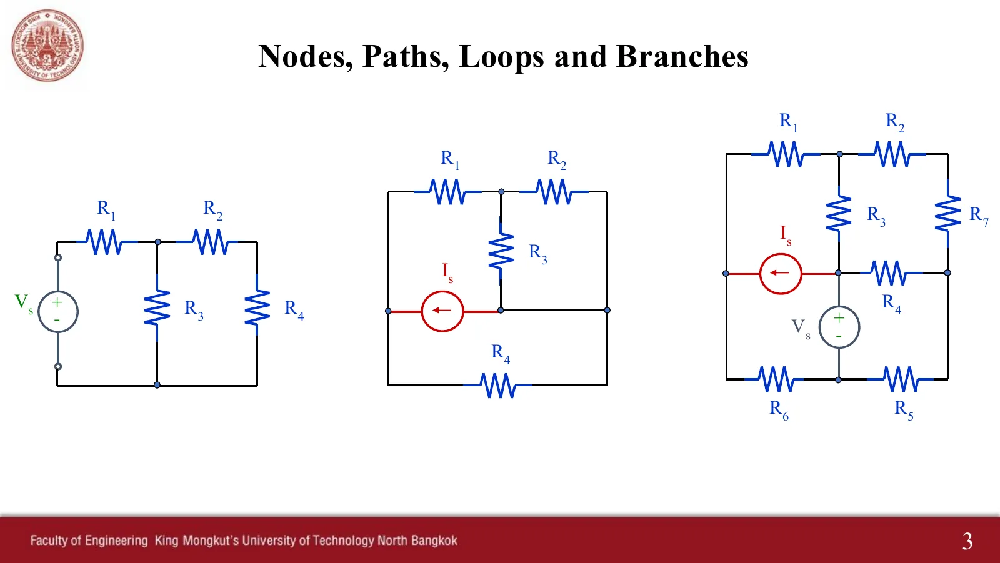
สไลด์หน้า 3 · แตะรูปเพื่อขยายSlide p. 3 · tap to enlarge
1
วงจรซ้าย: นับโนด กิ่ง เมช และลูป
Left circuit: count the nodes, branches, meshes and loops
สไลด์บทที่ 3 หน้า 3 · Hayt §3.1
Chapter 3 slides, p. 3 · Hayt §3.1
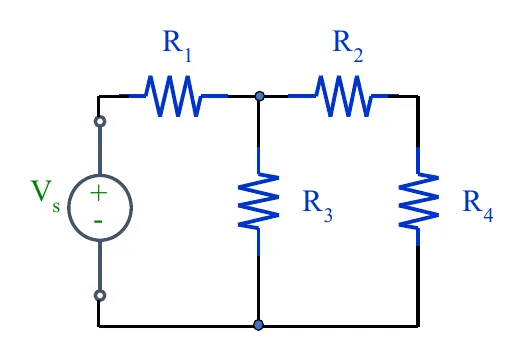
วงจรซ้ายของสไลด์หน้า 3 · แตะรูปเพื่อขยายLeft circuit, slide p. 3 · tap to enlarge
2
วงจรกลาง: นับโนด กิ่ง เมช และลูป
Middle circuit: count the nodes, branches, meshes and loops
สไลด์บทที่ 3 หน้า 3
Chapter 3 slides, p. 3
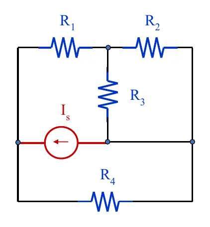
วงจรกลางของสไลด์หน้า 3 · แตะรูปเพื่อขยายMiddle circuit, slide p. 3 · tap to enlarge
3
วงจรขวา: นับโนด กิ่ง เมช และลูป
Right circuit: count the nodes, branches, meshes and loops
The algebraic sum of the currents entering any node is zero. In class it is written three equivalent ways: \(\sum I_{\text{in}} = \sum I_{\text{out}}\), \(\sum I_{\text{in}} = 0\) or \(\sum I_{\text{out}} = 0\); at the node on the slide, \(i_A + i_B = i_C + i_D\). In the simulations, purple arrows are the values given in the problem, the pink "?" arrow is the one asked, and once a node is chosen green arrows flow in and orange arrows flow out. The asked branch carries moving dots only once its value is found.
5
Ex 1: แหล่งจ่ายแรงดันจ่ายกระแส 3 A จงหากระแส \(i\) ใน \(R_3\)
Ex 1: the voltage source supplies 3 A; find the current \(i\) in \(R_3\)
สไลด์บทที่ 3 หน้า 5–6 · Hayt Example 3.1
Chapter 3 slides, pp. 5–6 · Hayt Example 3.1
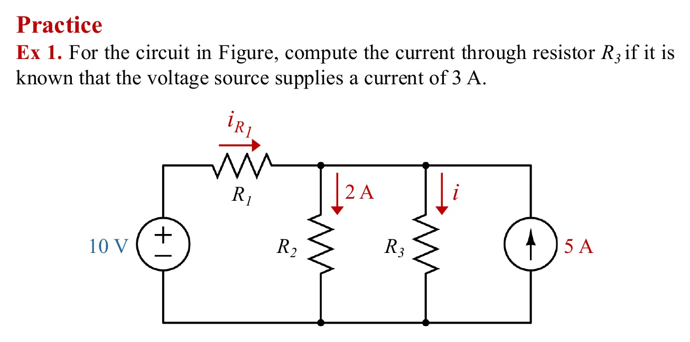
โจทย์จากสไลด์หน้า 5 · แตะรูปเพื่อขยายThe problem, slide p. 5 · tap to enlarge
ดูเฉลยที่ผู้สอนเขียนในห้อง (สไลด์หน้า 5–6)See the teacher's in-class working (slides pp. 5–6)
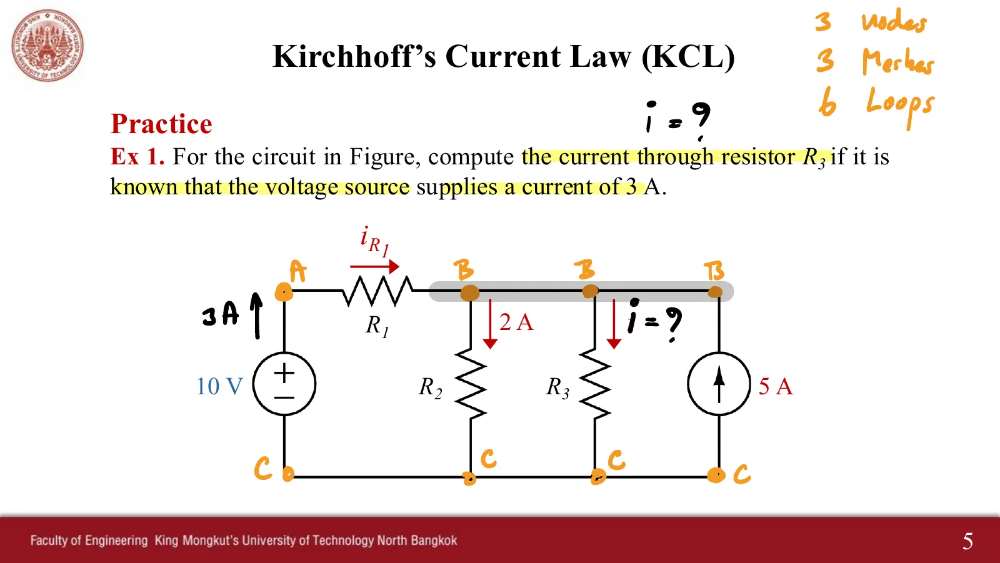
สไลด์หน้า 5 ฉบับในห้อง ก.ค. 2569Slide p. 5, in class, July 2026
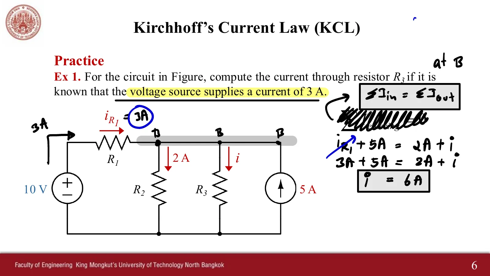
สไลด์หน้า 6 ฉบับในห้อง ก.ค. 2569Slide p. 6, in class, July 2026
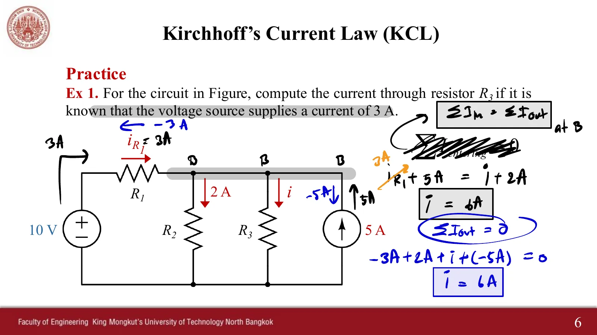
ฉบับในห้อง ธ.ค. 2568 (เขียนแบบ ΣI ออก = 0)In class, December 2025 (written as ΣI out = 0)
6
Ex 2: นับโนดและเมช แล้วหา \(R_A\) (ใช้ทั้งกฎของโอห์มและ KCL)
Ex 2: count the nodes and meshes, then find \(R_A\) (Ohm's law and KCL)
สไลด์บทที่ 3 หน้า 7 · Hayt Practice 3.1
Chapter 3 slides, p. 7 · Hayt Practice 3.1
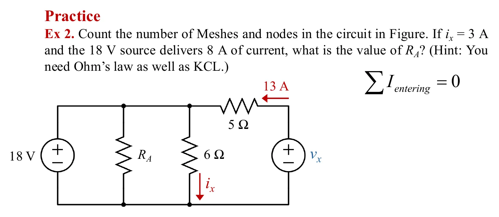
โจทย์จากสไลด์หน้า 7 · แตะรูปเพื่อขยายThe problem, slide p. 7 · tap to enlarge
ดูเฉลยที่ผู้สอนเขียนในห้อง (สไลด์หน้า 7)See the teacher's in-class working (slide p. 7)
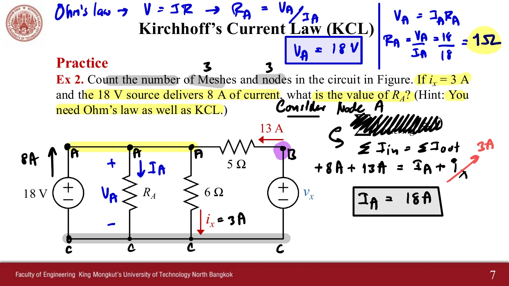
สไลด์หน้า 7 ฉบับในห้อง ก.ค. 2569Slide p. 7, in class, July 2026
Chapter 3 slides, p. 25 · Hayt Problem 3.34 · (a) power absorbed by each resistor, (b) power supplied by each current source, (c) the two sums match
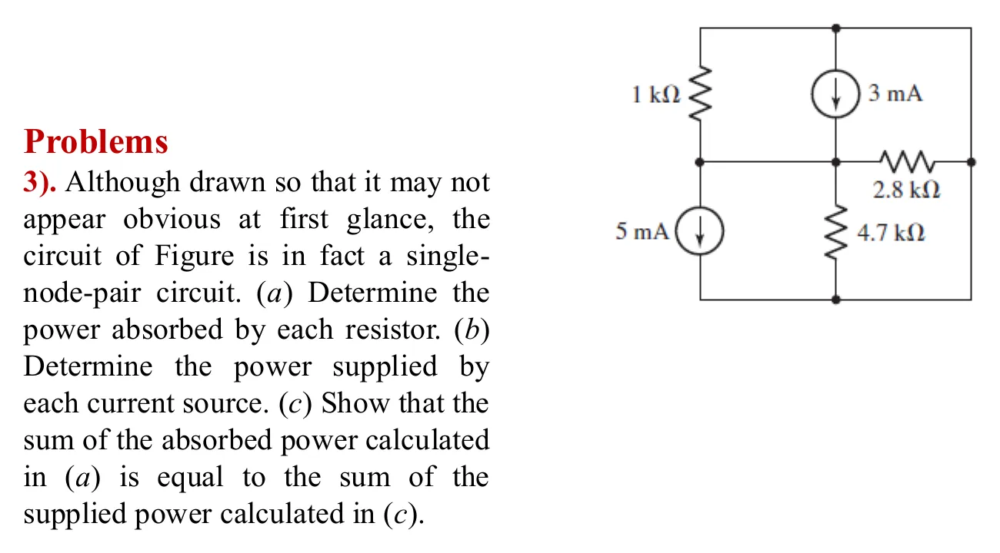
โจทย์จากสไลด์หน้า 25 (ตัดตารางคำตอบออก) · แตะรูปเพื่อขยายThe problem, slide p. 25 (answer table cut off) · tap to enlarge
ดูสไลด์ที่มีตารางคำตอบ และสิ่งที่ผู้สอนเขียนในห้องSee the slide with its answer table, and the teacher's in-class writing
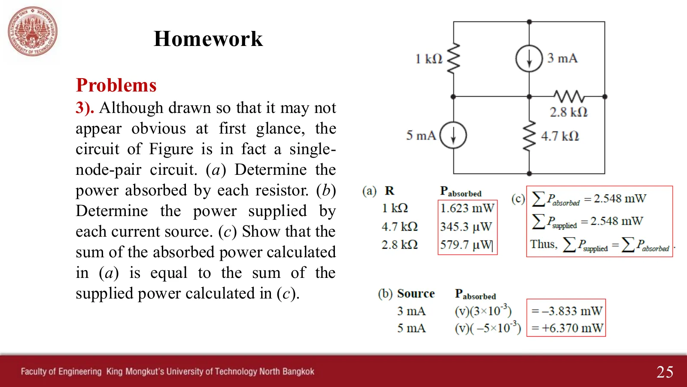
สไลด์หน้า 25 พร้อมตารางคำตอบSlide p. 25 with its answer table
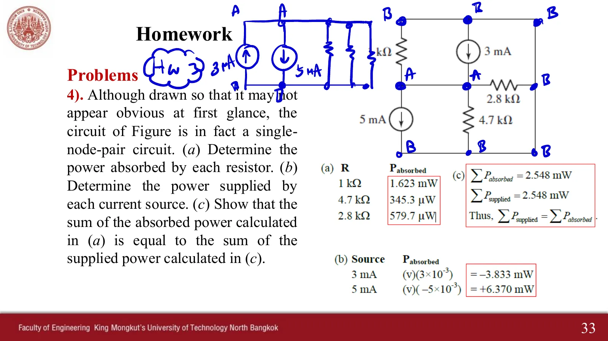
ฉบับในห้อง ธ.ค. 2568 (วาดใหม่เป็นโนด A กับ B)In class, December 2025 (redrawn between nodes A and B)
ตัวอย่างเพิ่มเติม (Extra Example) ข้อ 1.2
Extra example, item 1.2
10
เขียน KCL ที่โนด a และโนด b แล้วหา \(I_2\) และ \(I_3\)
Write KCL at nodes a and b, then find \(I_2\) and \(I_3\)
เอกสารตัวอย่างเพิ่มเติมบทที่ 3 ข้อ 1.2 (Fig. 2) · กำหนด \(I_0 = -2\) A, \(I_1 = -4\) A, \(I_S = 8\) A, \(V_S = 12\) V · ข้อ 1.1, 1.3, 1.4 อยู่ในหน้า 3.2
Chapter 3 extra examples, item 1.2 (Fig. 2) · given \(I_0 = -2\) A, \(I_1 = -4\) A, \(I_S = 8\) A, \(V_S = 12\) V · items 1.1, 1.3 and 1.4 are on page 3.2
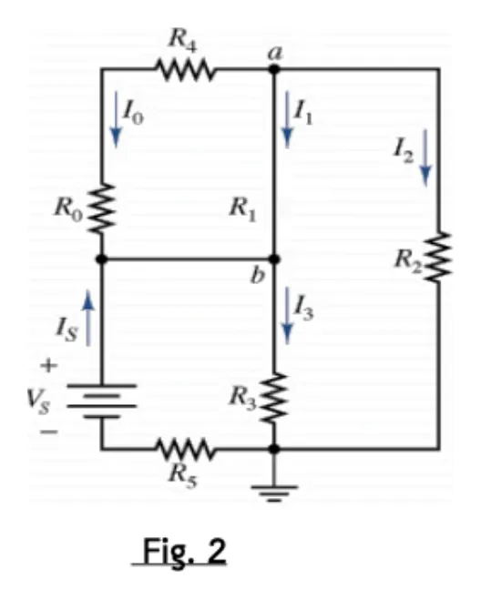
Fig. 2 ของตัวอย่างเพิ่มเติม · แตะรูปเพื่อขยายFig. 2 of the extra examples · tap to enlarge
ดูเฉลยลายมือของผู้สอน (ตัวอย่างเพิ่มเติมข้อ 1 ทั้งหน้า)See the teacher's handwritten solution (the whole of extra example 1)
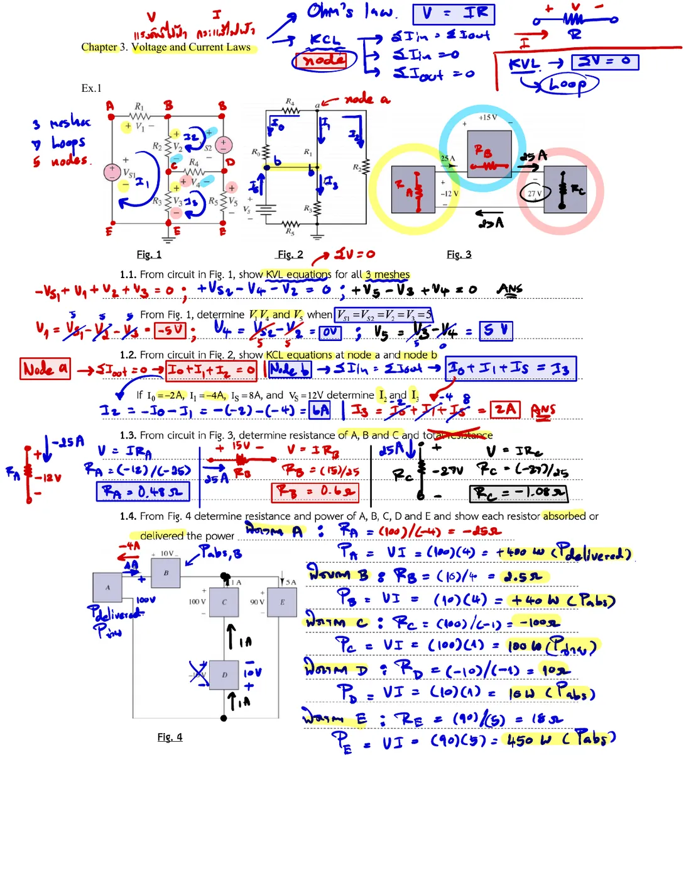
เฉลยลายมือ ตัวอย่างเพิ่มเติมข้อ 1Handwritten solution, extra example 1
เลือกโนดที่รู้กระแสอื่นครบ เหลือตัวที่ถามตัวเดียว เช่น Ex 1 ใช้โนด B ไม่ใช่โนด C (ที่ C มีกระแสของ \(R_2\), \(R_3\) และแหล่งจ่ายทั้งสอง)
Ex 2 ต้องใช้กฎของโอห์มด้วย: KCL ให้กระแส \(I_A\) ส่วนแรงดัน \(v_A\) ได้จากการต่อขนานกับแหล่งจ่าย 18 V
คำถาม: ใน Ex 2 แรงดัน \(v_x\) ของแหล่งจ่ายทางขวาเป็นเท่าไร (ใช้กฎของโอห์มกับตัวต้านทาน 5 Ω)
สไลด์บทที่ 3 หน้า 2–7, 23–25 · ตัวอย่างเพิ่มเติมข้อ 1.2 · Hayt §3.1–3.2, Example 3.1, Practice 3.1, ข้อ 3.8, 3.10, 3.34
Try this 1 — a node is the whole wire
Problem 9 is drawn to look like many points, but its first step leaves only 2 colours: all five elements are in parallel and share one voltage.
Problem 2: the whole left wire is node A and the whole right wire is node C, even though they are drawn very long.
Problem 4: press the button to remove the short. The nodes rise to 5 and the branches to 7, but there are still 3 meshes, as \(m = b - n + 1\) says.
Try this 2 — negative values in KCL
Problem 8: the arrow on \(R_3\) says −3 A pointing down, yet the yellow dots run up, because −3 A down is 3 A up.
Problem 7b gives \(I = -4\) A: the real 4 A flows up, against the drawn arrow.
Problem 7c: the resistor with a floating end has no dots at all. With no way back, no current can flow.
Try this 3 — choosing the node
Pick the node where every other current is known and only the asked one is left: Ex 1 uses node B, not node C (C meets \(R_2\), \(R_3\) and both sources).
Ex 2 also needs Ohm's law: KCL gives the current \(I_A\), and the voltage \(v_A\) comes from being in parallel with the 18 V source.
Question: in Ex 2, what is the voltage \(v_x\) of the source on the right? (Use Ohm's law on the 5 Ω resistor.)
Chapter 3 slides, pp. 2–7, 23–25 · extra example 1.2 · Hayt §3.1–3.2, Example 3.1, Practice 3.1, Problems 3.8, 3.10, 3.34